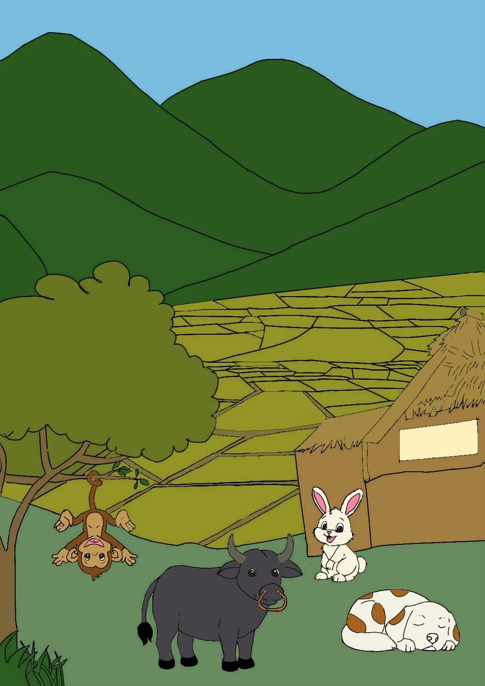
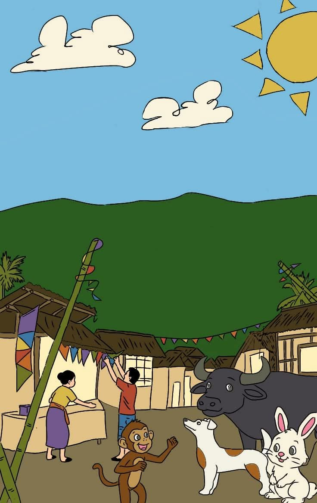
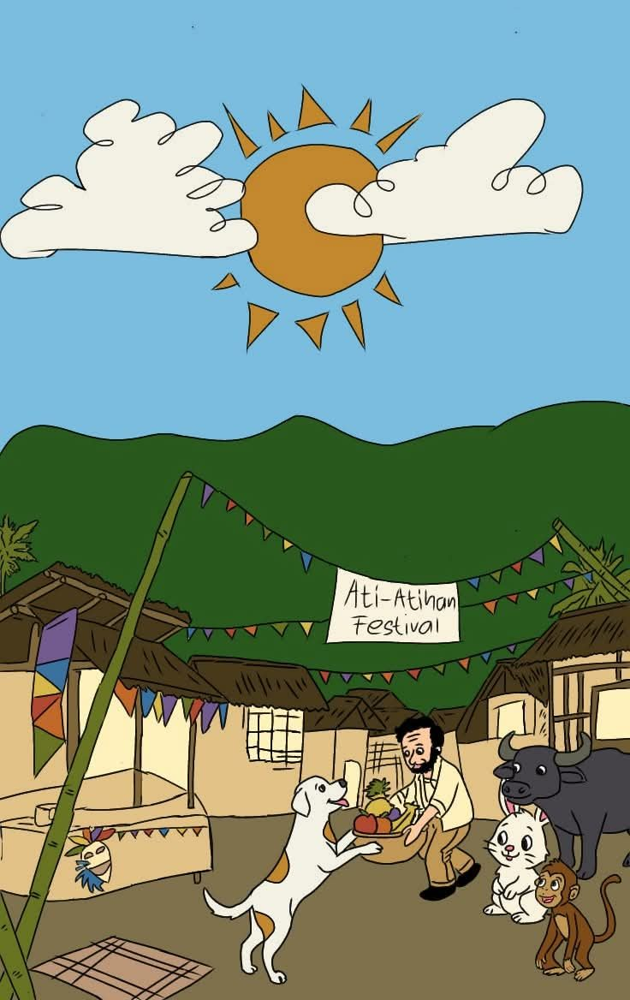
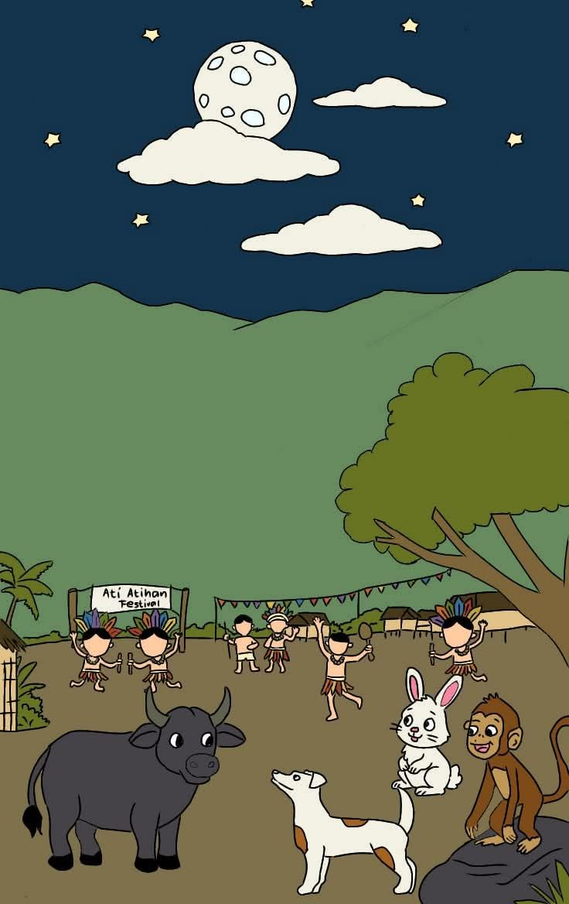

Story 05
A Festival to Remember

Great Book · Story 05
A Festival to Remember
00:00 --:--
The narration for this story has not been recorded yet.
Narrated by Glesy Casino, Rhea Mae B. Mamales, Jelyn P. Lanuza, and Kristine Garciano
Once upon a time, there were four unlikely friends living in a peaceful village in Aklan, alongside the villagers. Bago the carabao was strong and always ready to help, but he kept to himself. Kiko the monkey was playful and adventurous, forever climbing trees, exploring, and asking questions. Tala the rabbit was quiet and observant, noticing things the others missed. And then there was Puti the dog, the spoiled one of the group, pampered by the villagers and happiest when she was eating, sleeping, and repeating the cycle.

One morning, the villagers began preparing for the Ati-Atihan festival. Colorful banderitas were strung across the streets, bamboo decorations went up, and the sound of drums could already be heard. “What are they doing?” Kiko asked. “They’re celebrating the Ati-Atihan festival, the villagers do it every year,” Puti replied. “Then let’s join in!” said Kiko. Tala cut in, “We’re not invited. We’re animals.” Bago looked at them and said, “Sometimes we don’t need an invitation to join, helping them is the least we can do.” Kiko raised an eyebrow. “What do you mean?” Bago glanced back at the village. “Look at the villagers, everyone is doing something. In a place where everyone is working, we help too. It’s not mandatory, but it’s a way to get along with others.”

By afternoon, the village was ready. Kiko looked around and said, “So this is what they call bayanihan?” Tala smiled. “Yes.” Just then, Puti woke from her nap and saw an old man carrying a basket of fruits. She trotted over and offered to help him. “I thought you were the lazy one,” Kiko teased, “I never thought you’d help someone without even thinking about it.” The four of them laughed and went on celebrating the festival together.

By evening, Kiko asked, “So what is this whole event really about?” “About celebrating the festival, dancing, and more,” Puti said. Tala shook her head. “Not just that. It’s also about the people, remembering our culture, our history, and those who came before us.” Bago smiled. “See you all tomorrow, then?” “Sure, tomorrow,” the others agreed. Bago headed home first, and one by one, the rest followed.
Check what you remember
-
Who was the strong and quiet carabao?
- Kiko
- Bago
- Puti
- Tala
-
What festival were the villagers preparing for?
- Panagbenga
- Sinulog
- Ati-Atihan
- Pahiyas
-
Who was the playful and adventurous monkey?
- Tala
- Puti
- Kiko
- Bago
-
What did Puti do when she saw an old man with a basket of fruits?
- She ignored him.
- She went back to sleep.
- She offered to help him.
- She ate the fruits.
-
What is the main lesson of the story?
- Always sleep and eat.
- Helping, sharing, and remembering our culture are important.
- Animals should not join festivals.
- Festivals are only for dancing.